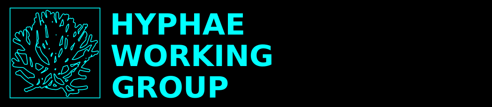

HYPHAE is a working group that formed in March 2024 in order to lay the groundwork for realistic visions of the future that are at once both optimistic, inspiring, and actionable while also fully respecting our current best understanding of the biophysical, social, and geopolitical constraints we will face in the coming decades.
In our view, most current visions of the future tend to be dangerously unrealistic, in one of two ways: such visions either a) propose a continuation of 'business as usual' that seems unaware of the most likely future bounds on our energy and material use; or b) embrace these bounds, and anticipate a generalized, homogenous, unmitigated 'collapse' for which preparation -- beyond steeling ourselves psychologically, and making local friends -- is mostly impossible.
It is our belief that by investigating and elucidating the most probable scenarios we will be facing in the coming decades, we are likely to find ways of significantly improving our collective ability to thrive in the future by beginning to build social and technical infrastructure in the present; and that we must urgently begin that process now, since preparation will only become more difficult as biophysical limits loom.
Our initial efforts will focus on several fronts of research, planning, and experimentation, including:
In order to aid planning and preparation, how might we elucidate and categorize some of the possible conditions we'll be facing in the coming decades, and our associated best responses?
What strategies work for developing a local (and non-local) community that includes a realistic awareness of upcoming biophysical limits, and seeks to work on projects that respect those limits?
What collaborative projects might help to establish the on-the-ground infrastructure (food, water, shelter, communications, transport) we'll need to collectively weather upcoming transitions and thrive together afterward?
How much food, water, and fiber -- and how much land -- will be required in order to support us through the upcoming transition?
What land and resources(including rural, suburban, and urban) will (or could) be available for growing and habitation as climate evolves?
What new skills will people need to develop in order to thrive in the future? What social arrangements best encourage these skills to be acquired, shared, and sustained? How might societal roles best evolve to accommodate the significant shifts in forms of livelihood that will be experienced by people across upcoming transitions?
join in
If you'd like to collaborate on any of the above work, feel free to chime in on our collective document -- we'd love to have you!